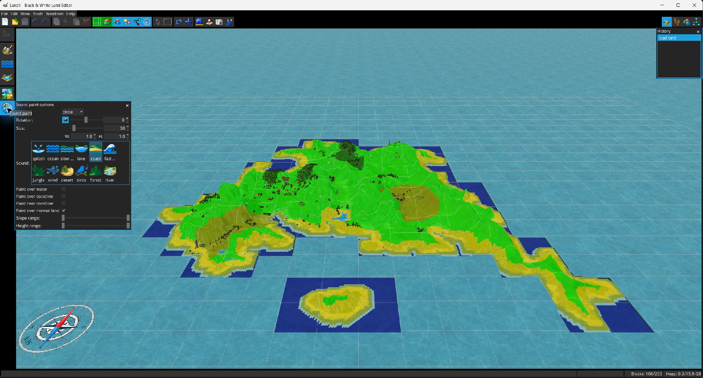

Klänge malen schreibt den in Landschaftszellen gespeicherten Umgebungsgeräuschwert. Beim Aktivieren wird die Zellattribut-Überlagerung vorübergehend auf die Geräuschdarstellung umgeschaltet.

Der Pinsel unterstützt Kreis-/Dreiecksform, Größe, Verhältnis und Drehung. Wählen Sie das Zielgeräusch und beschränken Sie das Malen anschließend nach:
 Ozean Küste See Fluss Langsame Wellen Schnelle Wellen Splash Wind Vögel Wald Dschungel Wüste.
Ozean Küste See Fluss Langsame Wellen Schnelle Wellen Splash Wind Vögel Wald Dschungel Wüste.
Die genaue in der Anwendung angezeigte Liste stammt aus der zur Laufzeit verfügbaren LND-Zellgeräusch-Enumeration.